ChitPlay: über 30 kostenlose Spiele für dich und deine Freunde
ChitPlay ist ein Wohnzimmer in 3D mit über 30 Brett-, Karten- und Partyspielen, die kostenlos im Browser laufen. Dabei ist das Zettelspiel Räuber und Gendarm (in Indien Raja Rani Chor Police), aber auch Ludo, Carrom, Schach, Schlangen und Leitern, Kartenspiele wie Call Break, Partyspiele und Arcade-Spiele auf dem Fernseher im Zimmer.
Nichts herunterladen, kein Konto anlegen. Link öffnen, Namen wählen und los: allein gegen Computerspieler, online mit Leuten aus aller Welt oder mit Freunden in der Nähe, jeder auf seinem eigenen Handy. Für jedes Alter und ohne echtes Geld.
So kannst du spielen
- Als Gast: Keine Anmeldung, kein Login. Namen wählen und sofort spielen.
- Gegen den Computer: Wenn niemand da ist, besetzen Computerspieler die freien Plätze. Leicht, normal oder schwer.
- Online: Setz dich an einen öffentlichen Tisch mit Spielern aus aller Welt.
- Mit Freunden in der Nähe: Starte das Spiel auf einem Handy und teile den Code oder QR-Code. Deine Freunde machen auf ihren Handys mit.
- Auf einem Handy: Reicht das Handy reihum weiter: ein Gerät genügt für die ganze Familie.
Alle Spiele
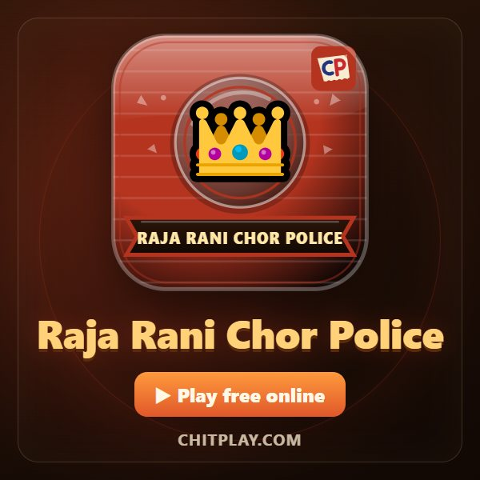
Vier Zettel, ein Räuber. Der Gendarm muss ihn an den Gesichtern erkennen. In Indien: Raja Rani Chor Police.
▶ Spielen Alle Regeln (Englisch)
Partyspiele
 Wer ist der Spion? (Who Is the Spy?) 👥 4–10 Spieler
Wer ist der Spion? (Who Is the Spy?) 👥 4–10 Spieler
Alle teilen ein geheimes Wort, nur der Spion nicht. Finde ihn an den Hinweisen.
▶ Spielen Alle Regeln (Englisch) Werwolf (Werewolf Night) 👥 5–10 Spieler
Werwolf (Werewolf Night) 👥 5–10 Spieler
Geheime Rollen, stille Nächte und laute Morgen. Finde die Werwölfe.
▶ Spielen Alle Regeln (Englisch) Wahrheit oder Pflicht (Truth or Dare) 👥 2–10 Spieler
Wahrheit oder Pflicht (Truth or Dare) 👥 2–10 Spieler
Freundliche Fragen und lustige Aufgaben für jedes Alter. Jede kann übersprungen werden.
▶ Spielen Alle Regeln (Englisch) Rätselzettel (Riddle Chits) 👥 2–10 Spieler
Rätselzettel (Riddle Chits) 👥 2–10 Spieler
Ein Rätsel öffnen und die Antwort wählen. Ein Tipp kostet einen Punkt.
▶ Spielen Alle Regeln (Englisch) Was sagt die Mehrheit? (Majority Vote) 👥 3–10 Spieler
Was sagt die Mehrheit? (Majority Vote) 👥 3–10 Spieler
Rate, was die meisten am Tisch wählen werden.
▶ Spielen Alle Regeln (Englisch) Faltgeschichte (Consequences) 👥 3–8 Spieler
Faltgeschichte (Consequences) 👥 3–8 Spieler
Schreibt eine Geschichte Zeile für Zeile auf gefaltetem Papier und faltet sie dann auf.
▶ Spielen Alle Regeln (Englisch)
Brettspiele
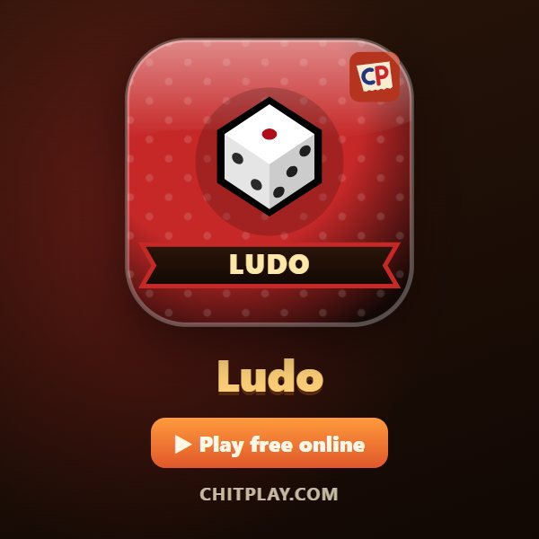
Ludo 👥 2–4 Spieler
Bring deine vier Figuren nach Hause. Mit einer Sechs raus und Gegner zurückschicken.
▶ Spielen Alle Regeln (Englisch)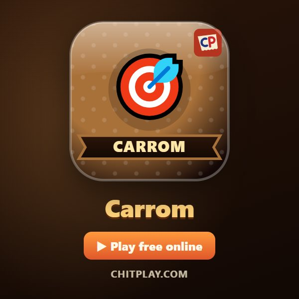
Carrom 👥 2 Spieler
Schnippe den Striker, versenke deine Steine und decke die Dame.
▶ Spielen Alle Regeln (Englisch)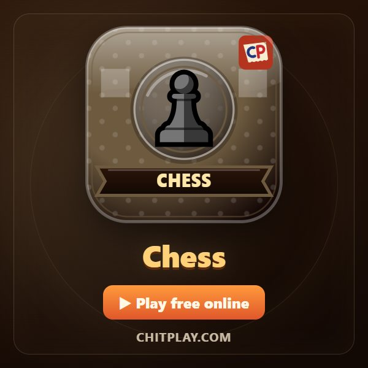
Schach (Chess) 👥 2 Spieler
Das ganze Spiel: Rochade, en passant, Umwandlung und Schachmatt.
▶ Spielen Alle Regeln (Englisch)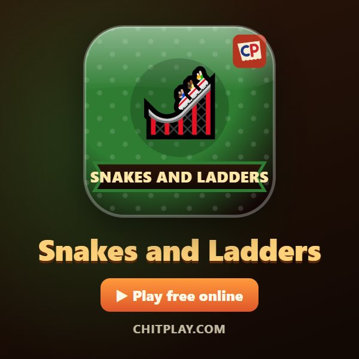
Schlangen und Leitern (Snakes and Ladders) 👥 2–4 Spieler
Leitern hoch, Schlangen meiden und genau auf 100 landen.
▶ Spielen Alle Regeln (Englisch)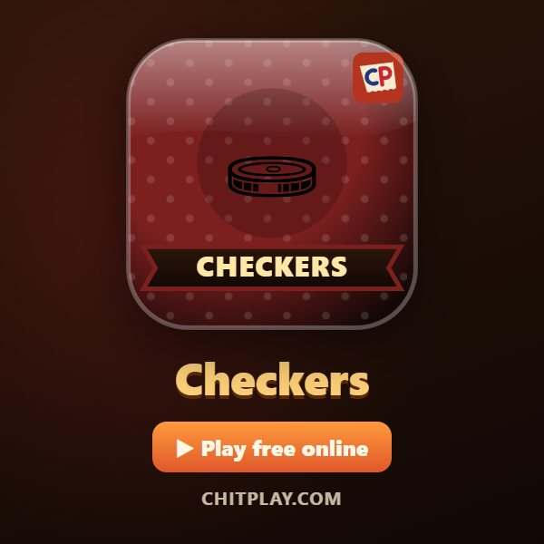
Dame (Checkers) 👥 2 Spieler
Über gegnerische Steine springen und eigene Damen krönen.
▶ Spielen Alle Regeln (Englisch)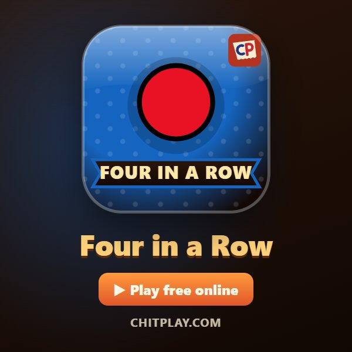
Vier in einer Reihe (Four in a Row) 👥 2 Spieler
Steine einwerfen und vor dem anderen vier in eine Reihe bringen.
▶ Spielen Alle Regeln (Englisch)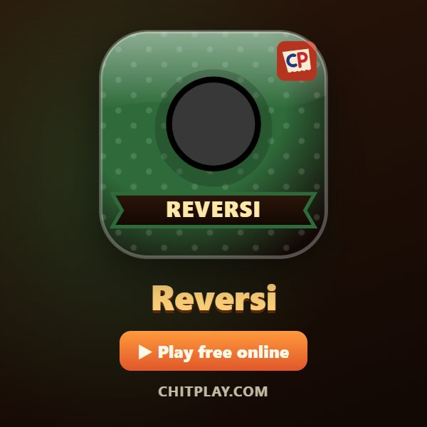
Reversi 👥 2 Spieler
Gegnerische Steine einschließen und auf deine Farbe umdrehen.
▶ Spielen Alle Regeln (Englisch)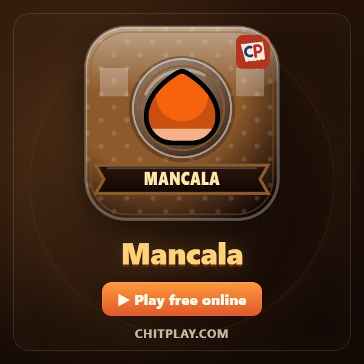
Mancala 👥 2 Spieler
Säe deine Samen über das Brett und fange, um dein Lager zu füllen.
▶ Spielen Alle Regeln (Englisch)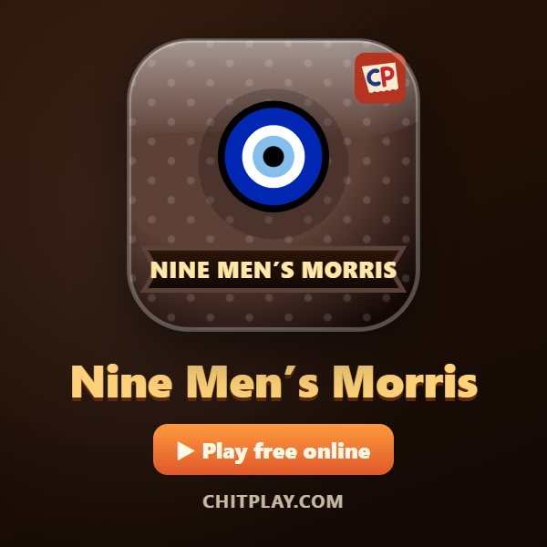
Mühle (Nine Men’s Morris) 👥 2 Spieler
Bilde Dreierreihen und nimm Steine weg, in diesem uralten Strategiespiel.
▶ Spielen Alle Regeln (Englisch)
Kartenspiele
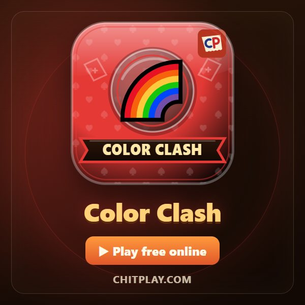
Color Clash 👥 2–4 Spieler
Farbe oder Zahl bedienen, +2 und Regenbogen +4 spielen und zuerst alle Karten loswerden.
▶ Spielen Alle Regeln (Englisch)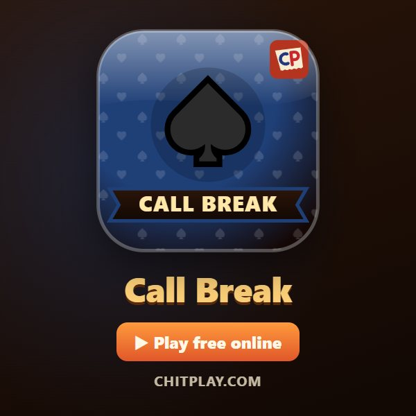
Call Break 👥 4 Spieler
Stiche ansagen und dann machen. Pik ist immer Trumpf.
▶ Spielen Alle Regeln (Englisch)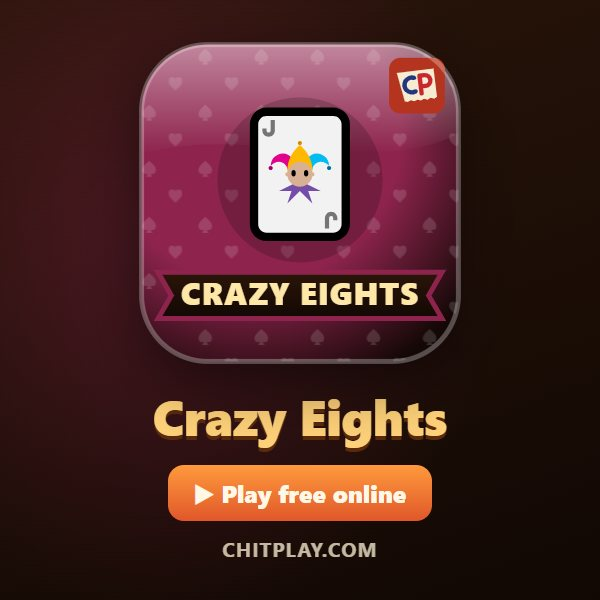
Verrückte Achter (Crazy Eights) 👥 2–4 Spieler
Farbe oder Wert bedienen, Achten als Joker nutzen und zuerst fertig sein.
▶ Spielen Alle Regeln (Englisch)
Arcade-Spiele (auf dem Fernseher, in 3D)
- Flying Chit 👥 1–4 Spieler
Steuere einen Zettel mit Flügeln durch Armreifen in einem endlosen Klassenzimmer und sammle Kombos.
▶ Spielen Alle Regeln (Englisch)  Tunnel Race 👥 1–4 Spieler
Tunnel Race 👥 1–4 Spieler
Ein Papierflieger in einem endlosen Tunnel. Weiche den Wänden aus und sammle Edelsteine.
▶ Spielen Alle Regeln (Englisch)- Hoop Flick 👥 1–2 Spieler
Zurückziehen, loslassen und den Ball in den nächsten Korb werfen. Saubere Treffer geben Kombos.
▶ Spielen Alle Regeln (Englisch)  Ghost Hostel 👥 1–4 Spieler
Ghost Hostel 👥 1–4 Spieler
Eine Nacht in einem Spukheim. Schlafe für Münzen, verstärke deine Tür und halte bis zum Morgen durch.
▶ Spielen Alle Regeln (Englisch)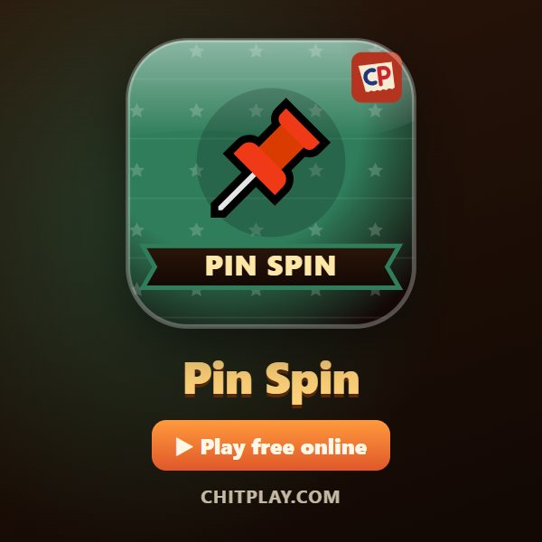
Pin Spin 👥 1–4 Spieler
Stecke Pinnnadeln in eine drehende Korkscheibe, ohne die anderen zu treffen.
▶ Spielen Alle Regeln (Englisch)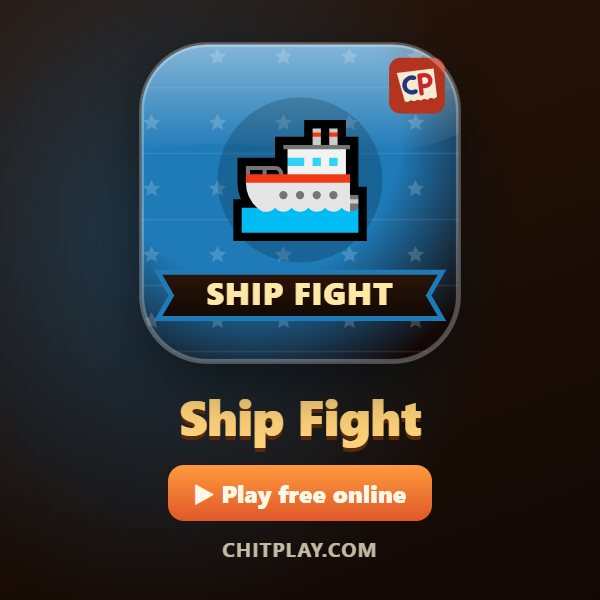
Ship Fight 👥 2 Spieler
Zwei Schiffe, Kanonen im Dauerfeuer. Ausweichen, zielen, den Freund versenken.
▶ Spielen Alle Regeln (Englisch)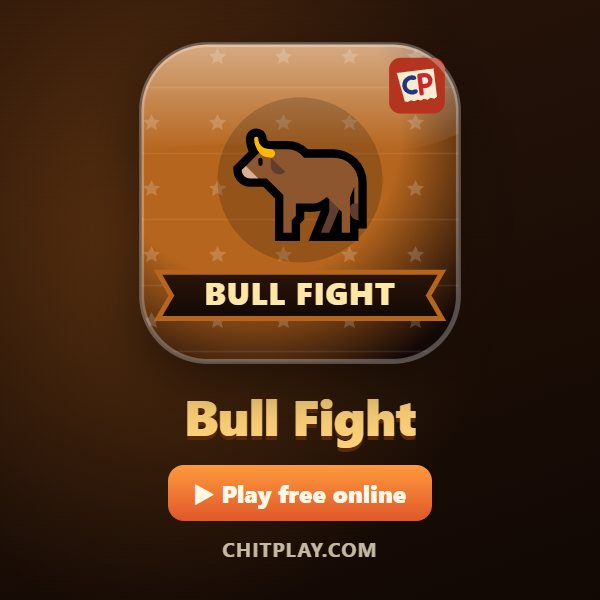
Bull Fight 👥 2 Spieler
Zwei Stiere in einem Sandring. Anstürmen und den anderen hinausschieben.
▶ Spielen Alle Regeln (Englisch)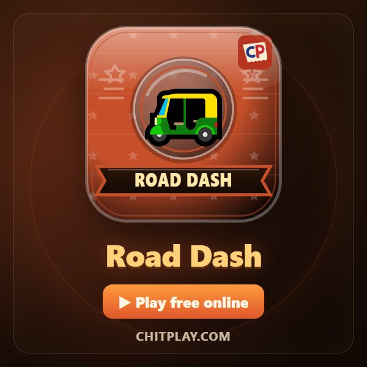
Road Dash 👥 1–4 Spieler
Eine Autorikscha auf einer endlosen Straße. Kühen und Bussen ausweichen, Münzen sammeln.
▶ Spielen Alle Regeln (Englisch)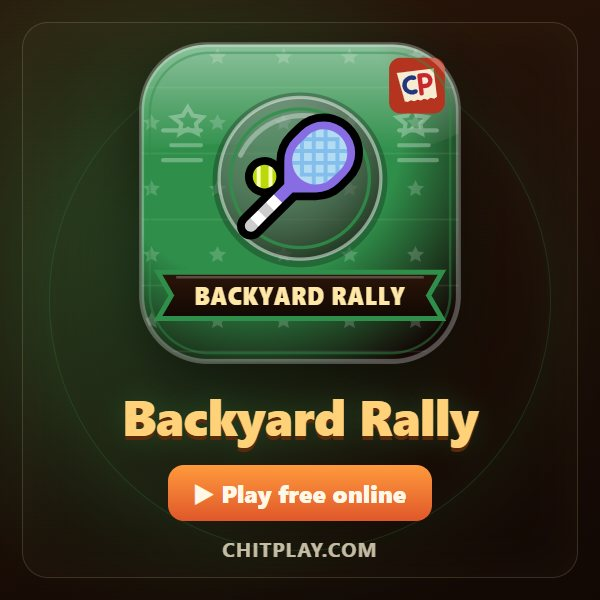
Backyard Rally 👥 2 Spieler
Schläger und Ball im Hinterhof. Der Ballwechsel wird schneller; wer zuerst sieben hat, gewinnt.
▶ Spielen Alle Regeln (Englisch)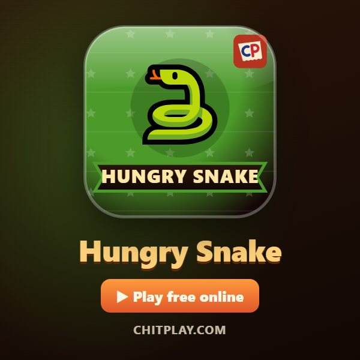
Hungry Snake 👥 1–4 Spieler
Snacks essen, länger werden und nirgends anstoßen. Die klassische Schlange.
▶ Spielen Alle Regeln (Englisch)
Würfelspiele
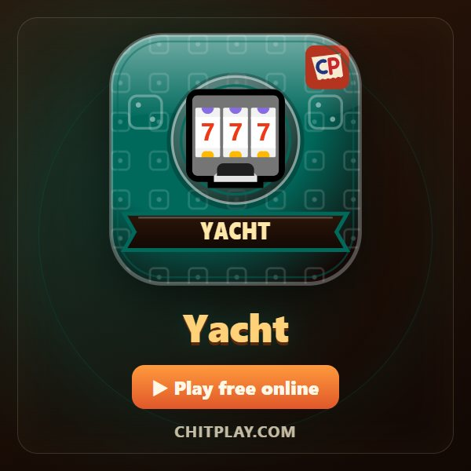
Yacht (Würfel) 👥 2–4 Spieler
Fünf Würfel, drei Würfe, zwölf Kategorien. Wähle deine Punkte klug.
▶ Spielen Alle Regeln (Englisch)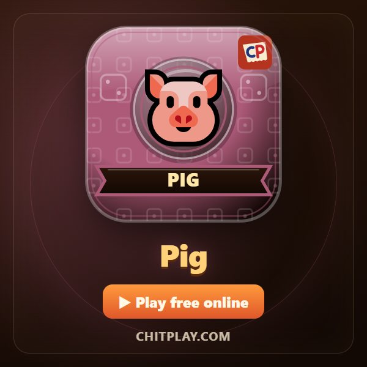
Pig (Würfel) 👥 2–4 Spieler
Weiterwürfeln oder Punkte sichern, aber eine 1 kostet den ganzen Zug.
▶ Spielen Alle Regeln (Englisch)
Papier-und-Stift-Spiele
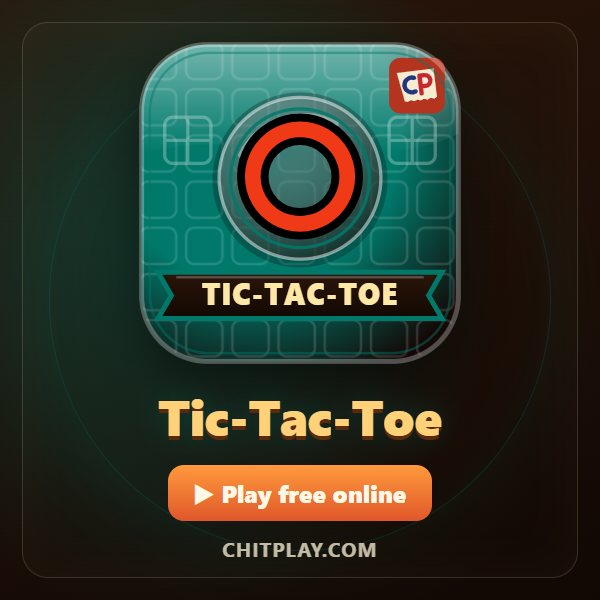
Tic-Tac-Toe 👥 2 Spieler
Drei in einer Reihe. In einer Minute gelernt, immer bereit für die Revanche.
▶ Spielen Alle Regeln (Englisch)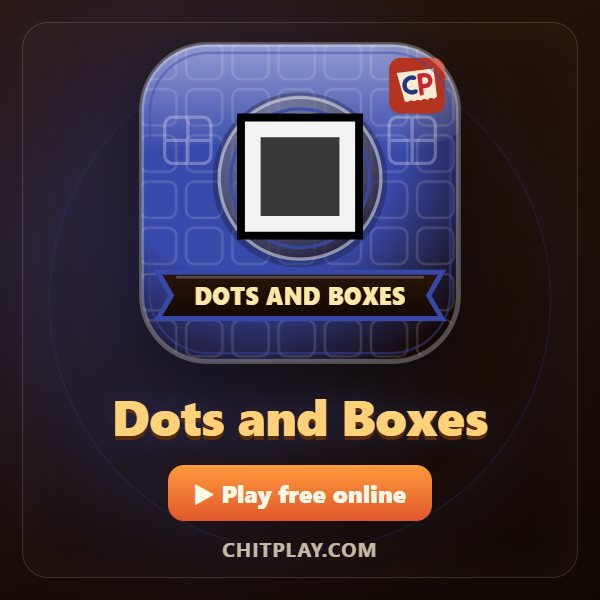
Käsekästchen (Dots and Boxes) 👥 2–4 Spieler
Striche ziehen, Kästchen schließen und dafür noch einmal ziehen.
▶ Spielen Alle Regeln (Englisch)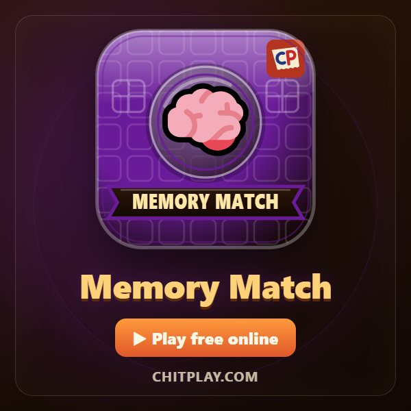
Gedächtnisspiel (Memory Match) 👥 2–4 Spieler
Zwei Karten aufdecken und merken. Die Paare gehen an das beste Gedächtnis.
▶ Spielen Alle Regeln (Englisch)
Häufige Fragen
Ist ChitPlay kostenlos?
Ja. Alle Spiele sind gratis, ohne echtes Geld, Wetten oder Preise.
Kann ich online mit Freunden spielen?
Ja. Mit In der Nähe (Nearby) startest du das Spiel auf einem Handy und teilst den Code, oder du spielst online mit Leuten aus aller Welt.
Muss ich eine App laden oder mich anmelden?
Nein. ChitPlay läuft im Browser und du spielst als Gast. Auf Wunsch kannst du es zum Startbildschirm hinzufügen.
Auf welchen Geräten läuft es?
Auf Handys, Tablets, Laptops und Computern, in jedem aktuellen Browser.
Andere Sprachen
English · हिन्दी · Hinglish · Español · Português · Français · Bahasa Indonesia · Türkçe · Italiano
Bei ChitPlay gibt es kein echtes Geld, keine Wetten und keine Preise. Punkte haben keinen Wert.